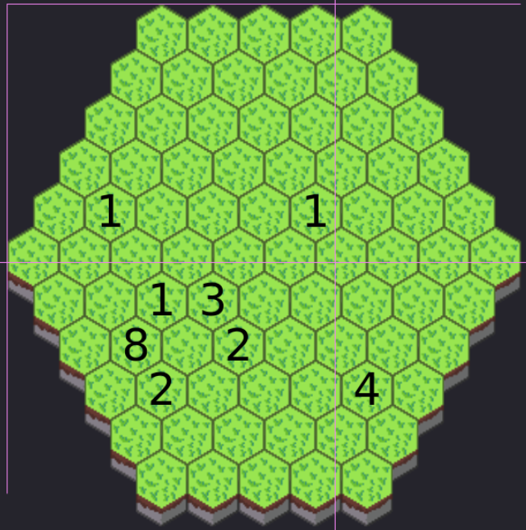

Tak zwane projekty programowania
hipl [github] [Styczeń 2025]
Przenośny skrypt dodający funkcjonalność jaką ma #include w C
fWorek-backend [github] [Październik 2024]
Backend w C do kopii dziennika, który ma mieć bardziej przejrzysty i bardziej uzupełniony UI niż oficjalny dziennik. Skupia sie na wyświetlaniu zapowiedzianych kartkówek itp
Unlocker [github] [Sierpień 2024]
Sklecony w tydzień datapack na planowany od wielu miesięcy serwer minecraft. Totalna wtopa administracyjna, ale datapack nawet ok
Chat server [strona] [Lipiec 2024]
Projekt by szybko nauczyć sie podstaw robienia serwera w C. Ku nikogo zaskoczeniu jest to sklejone trytytkami i kropelką przez co co chwile crashuje.
Exterminator [strona] [Lipiec 2024]
THE gra. Nie zamierzam porzucić tego projektu dopóki go nie skończe; teraz jest po prostu przerwa.. Jest to 4X gra typu co robi Paradox, która wykorzystuje w stacku JS, Rust + WASM i C na backendzie
Świeczki [strona] [Czerwiec 2024]
Projekt na poznanie WASM. Zainspirowałem się elektrycznymi świeczkami w kościele i chciałem sprawdzić czy można na nich zrobić jakąś animacje
Techquest [github] [Kwiecień 2024]
Pierwszy hackaton w moim technikum. Dobry pomysł ale wygląd i prezentacja mówiona to porażka
Ball [github] [Marzec 2024]
Zbliżał sie egzamin INF 04 i nie miałem najmniejszego zamiaru pisać go w Ckółko i krzyżyk, więc zacząłem pisać program do rysowania kształtów w C++ na świetnym laptopiku z prockiem Intel Atom N450 1,6GHz. Miałem problem z tym, że mieści sie mało znaków na ekranie, więc dodałem layer grupujący normalne znaki na znaki braille'a
Fow-demo [github] [Listopad 2023]
Próba zrobienia gierki w "normalnym" game engine'ie (tutaj: godot). Gra miała polegać na 2d widoku z góry horror fnaf typeshit
Strona patrykduda.com [github] [strona] [Lipiec 2023]
Gadająca głowa na youtube'ie zainspirowała mnie do stworzenia własnej strony internetowej. Strona w zamyśle ma być elegancka i wykorzystująca javascripta w ostateczności
2dasciigame [github] [Czerwiec 2023]
Próba faktorio, ale którego łatwo modować i działa w konsoli. Pokonało mnie komunikacja między klasami i implementacja conveyor belt'ów
Pokoje Rust [github] [Maj 2023]
Projekt na nauczenie się języka programowania Rust. Jest to "gra" tekstowa pełna inside joke'ów w mojej grupie kolegów
Watykanhell [github] [strona] [Maj 2022]
Próba roguelike'a i kolaboracji z kolegami w pisaniu razem projektu. Totalna klapa
Kromer [github] [strona] [Styczeń 2022]
Pierwszy projekt z programowania. Wybrałem phaser'a w javascripcie, gdyż powinien być dobry na początek i koledzy nie muszą nic pobierać by zagrać
Custom Origins [github] [Grudzień 2021]
Datapack (jakby mod do minecrafta) inspirowany popularnym modem "Origins". Wymyślany na lekcjach polskiego i wykorzystany na największym hostowanym serwerze tego czasu dla znajomych
Moja pierwsza "Only one command" [kod] [Listopad 2016]
Zanim powstały datapacki używało sie tzw. "only one command" czyli pojedyncza komenda, która pojawiała strukture z command blockami - pretty much program. Pisałem to na przerwach w tym blogu na telefonie. Działa na 1.9.4